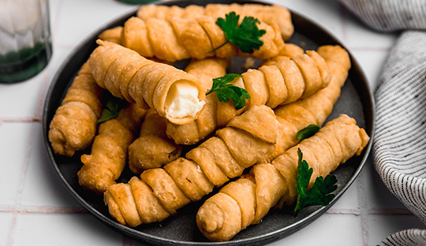

Tequeños

Ok, so I'm sure not everyone even knows what a tequeño is. Hell, until I discovered the gem that is Arepas Cafe in my hometown of Astoria, New York, many years ago, I had never heard of or seen one. But after one bite, I knew I could never live my life without them again.
Basically, these things are Venezuelan fried cheese sticks, originating in the town of Los Teques. Think mozzarella stick, but replace the mozzarella with a squeaky and salty queso blanco, and sub out the breadcrumb coating for a pastry-like shell. Sounds pretty amazing, right?
They're so good that I felt I'd be doing a disservice to the full tequeño experience if I didn't go back and fix the flaws of my initial recipe, which had a crust that lacked the blistery appearance and rich flavor it should have, as well as problems with cheesy explosions that seeped out of the dough while frying.
Ingredients
- 10 ounces all-purpose flour (about 2 cups)
- 1 teaspoon Kosher salt
- 6 tablespoons cold butter, cut into 1/4-inch cubes
- 1 large egg, lightly beaten
- 6 tablespoons cold water, plus more as needed
- 12 ounces queso blanco or queso de frier, cut into slices 1/2-inch x 1/2-inch x 2 1/2-inch
- Oil of your choice, for frying
Preparation
- Place flour and salt in workbowl of a food processor fitted with a steel blade; pulse to combine. Sprinkle butter evenly over flour and pulse until butter is cut into pieces slightly smaller than a pea, about 8 one-second pulses. Transfer dough to a large bowl.
- Add in egg and water. Using a rubber spatula, press dough against side of bowl until it forms a ball. If dough is not fully forming, add additional water one tablespoon at a time until it comes together. Press dough into a disc, wrap tightly in plastic wrap, and rest in refrigerator for 30 minutes.
- Unwrap dough and place on a lightly floured surface. Roll out into a square 1/8-inch thick. Cut off edges to create a 12-inch square. Cut square into 14 strips, each 3/4-inch wide.
- Take one strip of dough and drape end over top of one cheese slice. Wrap entire cheese slice in dough on a diagonal, overlapping dough. Cover bottom of cheese slice in dough and pinch edges close to fully seal. Repeat with remaining cheese slices.
- Fill a cast iron skillet with 3/4-inch of oil. Heat oil to 400°F (204°C) over high heat. Place tequeños in oil and fry until crust is golden brown and blistery, 3 to 5 minutes, turning halfway through. Transfer tequeños to a paper towel-lined plate, let cool for 1 to 2 minutes, then serve immediately.